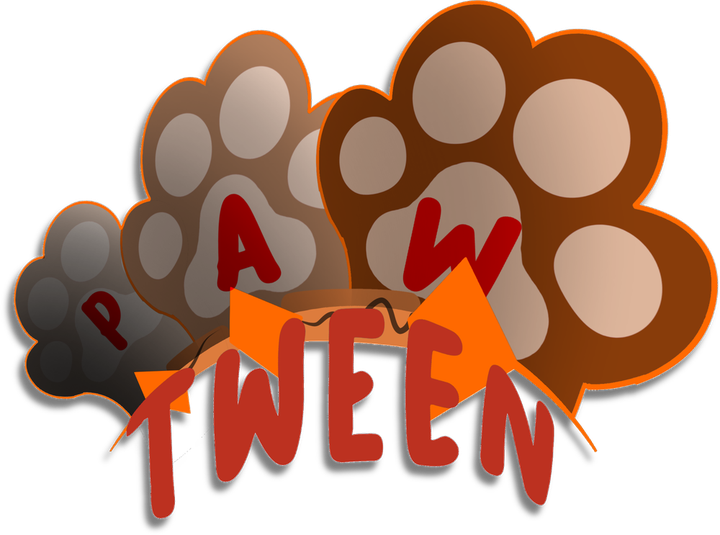

Edit Undo Ctrl+Z Redo Ctrl+Y Layer Split layer at playhead B Duplicate layer Group selected layer Copy layer Ctrl+C Cut layer Ctrl+X Paste layer Ctrl+V Delete layer Timeline Delete keyframe Del Add waypoint at playhead M Clear all waypoints Tools Find and replace… Record steps (macro) Search commands… Ctrl+K
Image Canvas size YouTube 1920×1080 (16:9) 1280×720 3840×2160 (4K) Classic 1440×1080 (4:3) Ultra-wide 2560×1080 (21:9) Shorts / TikTok / Reels 1080×1920 Instagram portrait 1080×1350 Square 1080×1080 Background Background colour… Transparent grid (preview) Background image or video… Background settings… Remove background image or video Look Colour palette… Sticker outline (clipart look)
View Fullscreen preview F Re-render everything Ctrl+Alt+R Toggle guides G Zoom in Zoom out Fit to window Zoom to 100% Motion blur on or off Graph and waveform view Panels Show or hide layers panel Show or hide inspector Show or hide timeline Light or dark theme Timeline zoom in Timeline zoom out Toggle loop L
Animate Keyframes Shift keyframes later Shift keyframes earlier Stretch timing ×2 Compress timing ×0.5 Reverse keyframes Ping-pong loop Fit length to last keyframe Snap keys to the beat Time Retime project… Time remap (slow-mo, ramps)… Check loop… Motion Draw motion path… Remove motion path Drop and bounce… Make a crowd… Onion skin… Warp and mesh Warp: cloth, hair, shapes… Edit mesh on selected layer Snap mesh points to default Remove mesh Parenting Parent web and elasticity… Switch parent at playhead…
Character Costumes Costume group on/off Next costume ] Previous costume [ Lip sync from audio… Auto-blink… Rigging Split into pieces (auto-rig) Pose with IK (drag a hand or foot) Lighting Light and cel shading…
Advanced Effects and looks… Formulas… Adjust selected layer… Adjust whole picture… Housekeeping Sticker border size (cycle) Grid square size (cycle) Rebuild preview cache Cache background video now Trim all layers to drawn pixels Trim selected layer Reset selected layer
Help Learn Pawtween… Tutorials Basics (start here) Animating and the timeline Characters and rigging Warps, effects and looks Power tools Exporting and saving Everything, start to finish Reference Shortcuts Search commands Ctrl+K
Search commands Ctrl+K ? ↶ Undo ↷ Redo
Pick an ease ×
Every tween in the row Shift-click keeps this open
Parent web Drag a layer onto another to parent it. Drop on empty space to unparent. Click a ⟲ dot on a line to make that link elastic. Close
Shortcuts (click to close)

Drop your PNGs here In Krita use File → Export Layers, then add the PNG files or the whole folder. Files are stacked in name order, first at the bottom.
⏮ ◆◀ ◀ ▶ Play ▶ ▶◆ ⏭ Speed 0.25× 0.5× 1× 2× 180° ⛶
Properties
Graph presets
Highlight tweens on the timeline, then click a graph. You can also drag a graph onto a ribbon.
Custom graph Apply to keyframe Save preset
Double-click to add a point, double-click a point to remove it. Drag points and their handles. Going above or below the box makes the motion overshoot.